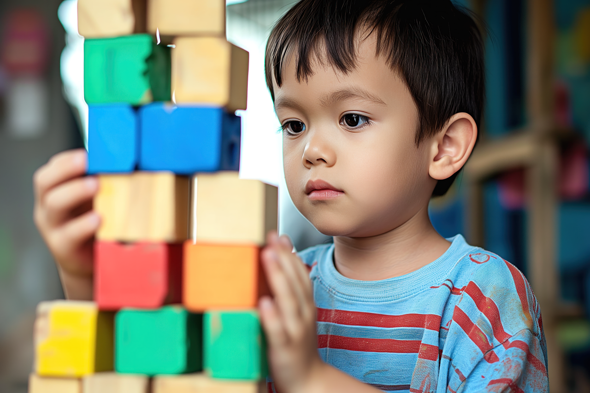

Confira se o link é oficial, procure CNPJ, redes sociais, endereço e formas de contato.

Por que apoiar?
Doar é aproximar recursos de quem precisa.
Famílias de pessoas autistas podem precisar de informação, acessibilidade, acompanhamento multiprofissional e oportunidades educacionais. A doação consciente ajuda organizações a manterem projetos, atendimentos e ações comunitárias.
Antes de doar
Três cuidados simples
Veja qual público a instituição atende e como as doações são usadas.
Depois de doar, continue seguindo campanhas, ações e prestação de contas.
Canais de doação
Instituições para conhecer
Os botões abaixo direcionam para páginas externas. Antes de doar, confira as informações diretamente nos canais oficiais.
AUMA
Organização da sociedade civil, sem fins lucrativos, fundada em São Paulo, com atuação ligada à educação especializada.
Abrir página oficialAMA
Associação que oferece assistência educacional e terapêutica individualizada para pessoas autistas encaminhadas pela rede pública.
Abrir página oficialFADA
Instituição voltada a qualidade de vida, desenvolvimento de capacidades e incentivo a interações sociais de jovens e adultos autistas.
Abrir página oficial